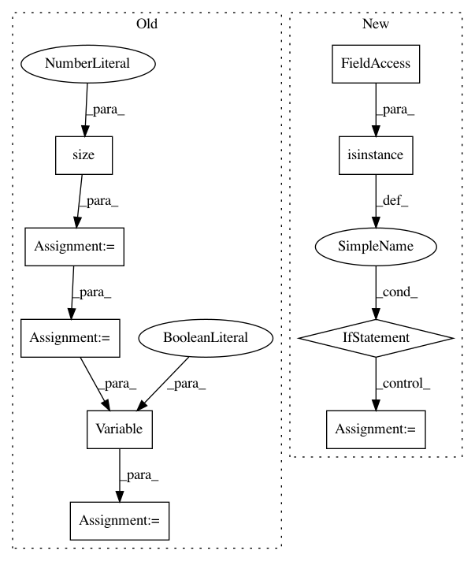

6e4b7e22eeb79f7e1c39d862f10ec3e61e51c979,fairseq/sequence_generator.py,SequenceGenerator,_decode,#SequenceGenerator#Any#Any#,317
Before Change
return finalized
def _decode(self, tokens, encoder_outs):
length = tokens.size(1)
// repeat the first length positions to fill batch
positions = self.positions[:length].view(1, length)
// wrap in Variables
tokens = Variable(tokens, volatile=True)
positions = Variable(positions, volatile=True)
avg_probs = None
avg_attn = None
for model, encoder_out in zip(self.models, encoder_outs):
After Change
avg_probs = None
avg_attn = None
for model, encoder_out in zip(self.models, encoder_outs):
if isinstance(model.decoder, FairseqIncrementalDecoder):
decoder_out, attn = model.decoder.incremental_forward(tokens, encoder_out)
else:
decoder_out, attn = model.decoder.forward(tokens, encoder_out)
probs = F.softmax(decoder_out[:, -1, :]).data
attn = attn[:, -1, :].data
if avg_probs is None or avg_attn is None:
avg_probs = probs
In pattern: SUPERPATTERN
Frequency: 3
Non-data size: 9
Instances
Project Name: elbayadm/attn2d
Commit Name: 6e4b7e22eeb79f7e1c39d862f10ec3e61e51c979
Time: 2017-11-08
Author: myleott@fb.com
File Name: fairseq/sequence_generator.py
Class Name: SequenceGenerator
Method Name: _decode
Project Name: OpenNMT/OpenNMT-py
Commit Name: cc80175c2704c0dbbfe908f6b678c84ef1741a56
Time: 2017-03-22
Author: bryan.mccann.is@gmail.com
File Name: onmt/Models.py
Class Name: Encoder
Method Name: forward